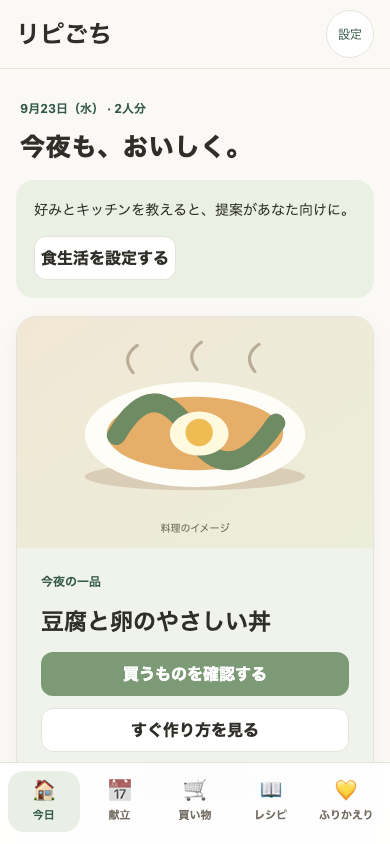
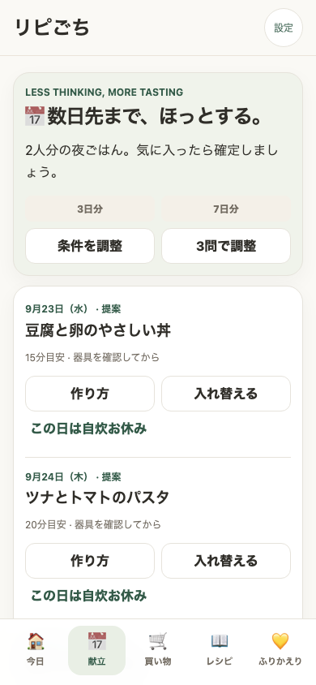
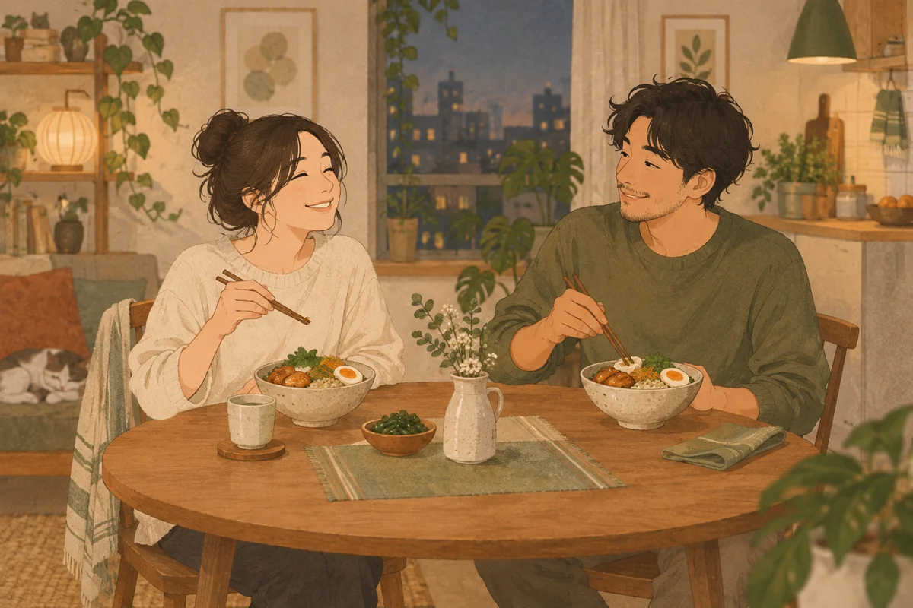

毎日、ゼロから考えない
まずは提案から選ぶだけ。主菜と副菜の組合せに悩まず、夜ごはんを1日1品で。
1人・2人暮らしの夜ごはんに
人数・調理時間・食べられない食材を教えたら、まずは3日分の夜ごはん。食べたい提案を確定すると、必要な材料が買い物リストにまとまります。
無料ではじめられる。保存・記録・バックアップの基本機能はずっと無料。条件に合う候補がない場合は設定を調整できます。
基本は端末内に保存。同期・AI取り込みを使ったときは、対象データをサーバーへ送信します。


まずは提案から選ぶだけ。主菜と副菜の組合せに悩まず、夜ごはんを1日1品で。
買い物リストに入るのは確定した献立の材料。家にあるものや購入済みのものを整理できます。
食べたら「作った」。また食べたい一皿はボタンで記録し、写真やメモも残せます。
実際の使い方
人数・平日の調理時間・食べられない食材。好みや器具の詳細はあとから。
3日分を見て、食べたい料理を確定。入れ替えや自炊のお休みも選べます。
確定した献立からリストを作成。常備品は残量を確認して調整します。
今日の料理から記録。気に入ったら「また食べたい」を残しましょう。
好みの違いも、ごちそうに。
料理写真8枚と、迷ったときの二択9問。「味か彩りか」「節約か栄養バランスか」「時短かひと手間か」の3軸から、あなたのキャラクターを見つけます。
結果は画像でシェア。「同じ丼が続いてもあり？」なんて、話すきっかけにも。
夜ごはんタイプを診断する今の好みを楽しむ診断です。性格や健康状態の判定ではありません。


1人分・2人分で夜ごはんを計画。SNSで見つけたレシピも、URL・画像・手入力で自分のコレクションに追加できます。
AI取り込みは下書きを確認・修正して保存。材料の人数換算は、元レシピの人数が確認できる場合に行います。

レシピの保存・編集、食事の記録、JSONバックアップの書き出し・読み込み。
より豊富な提案レシピ、AI取り込みの利用枠拡張、端末間同期などを有料候補として検討しています。
同期・AI取り込みを使ったときは、対象データをサーバーへ送信します。端末内のデータはバックアップできます。
現在は無料で提供しています。有料プランの価格・内容・開始時期は未定です。導入前に案内し、同意なく課金することはありません。
レシピの保存・編集、食事の記録、JSONバックアップの基本機能は無料で継続します。現在は全機能を無料で提供していますが、将来の有料プランを予定しています。豊富な提案レシピ、AI取り込みの利用枠拡張、同期などが候補です。価格や対象機能は確定前に案内し、自動的に課金へ切り替えることはありません。
「3問ではじめる」なら人数・調理時間・食べられない食材の3画面だけです。「設定せずに見てみる」では、用意されたレシピの3日分の提案を確認できます。このプレビューには個人の食材制限や器具の条件が未設定なので、実際に作る前に確認してください。詳細設定や診断はあとから使えます。
3問で献立を提案し、利用者が確定した料理の材料から買い物リストを作ります。提案しただけでは買い物に追加しません。条件に合うレシピがない場合は、条件の見直しやレシピの追加が必要です。
基本は端末内に保存します。同期を有効にすると、共有対象のレシピ・記録・器具・常備品・献立・買い物などをサーバーへ送信・保存します。AI取り込みでは入力したURLや解析対象画像などをサーバーへ送り、AIサービスで処理します。個人の診断回答や食材制限は家族同期に含めません。
URLのタイトル・サムネイル取得、外部画像や動画の表示にも通信が発生します。共通レシピの照会・修正提案では、そのURLや提案内容を送信します。「端末内保存」は通信が一切ないという意味ではありません。
ブラウザで利用できます。「ホーム画面に追加」でアプリのように起動できます。iPhoneでSNSレシピを保存する場合は、URLのコピー＆貼り付けをご利用ください。
設定からJSONバックアップを書き出して保管してください。ブラウザのデータ削除などで端末内の保存内容が消える場合があります。バックアップには個人設定も含まれるため、保管先や共有先に注意してください。